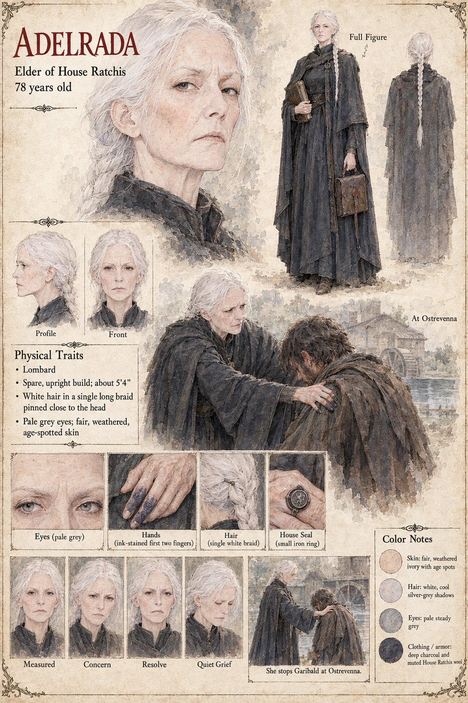

Adelrada
Elder of House Ratchis · 78 years old
Elder of House Ratchis, spare and upright at seventy-eight, with the ink-stained fingers of a woman who has kept her own ledgers for decades. She isn't moved by Landulf's legal claim on Vardane's mill so much as by what it does to Garibald — a man she has watched grieve quietly and competently his whole life, breaking, for the first time she's ever seen, at her own table at Ostrevenna. She sends the ruling to her notary Vitalis rather than accept a summary of it, and spends two years afterward keeping a private accounting nobody else is shown: what the mill's loss once cost Garibald, weighed against what its keeping has since cost Landulf.
She acts only once the sum finally closes — on Landulf's own unsent confession, not on any House vote — instructing Vitalis to find an unconnected claimant, and quietly withdrawing House Ratchis's reach from Duke Grimoald's war until the mill returns to Vardane exactly as quietly as it left. She dies eleven years later in her own bed. Her great-nephew Ranulf finds the ledger afterward, and is the only person who ever learns what she'd actually been counting.